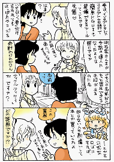

 『Tcl/Tk お気楽 GUI プログラミング 入門編』は、Oh!X 1999 春号 (ソフトバンク) に掲載された拙作の Tcl/Tk 入門講座です。Tcl/Tk に興味を持ってもらうため、簡単で面白そうな機能をひととおり説明しました。なお、ホームページへの転載にあたって、内容の再考証は行っていません。ご了承下さいませ。
左の画像は Oh!X 1999 春号に掲載された 4 コママンガです。M.Hiroi はとても気に入っていたので、作者の岡村直也様にお願いして掲載許可をいただきました。岡村様、どうもありがとうございます。画像をクリックすると、大きな画像が表示されます。なお、画像の著作権は岡村直也様が保持されています。無断使用や無断転載は固くお断りいたします。
＜ Oh!X 1999 春号 (ソフトバンク) pp.97 - 114 から転載 ＞
『Tcl/Tk お気楽 GUI プログラミング 入門編』の著作権は筆者「広井誠 (Makoto Hiroi) 」が保持します。無断使用や無断転載は禁止いたします。
『Tcl/Tk お気楽 GUI プログラミング 入門編』で作成したプログラムはフリーソフトウェアとします。ご自由にお使いください。プログラムの改造や配布もご自由にどうぞ。その際は、出典を明記してくださるようお願いいたします。
ただし、これらのプログラムは無保証であり、使用したことにより生じた損害について、作者「広井誠 (Makoto Hiroi) 」は一切の責任を負いません。また、これらのプログラムを販売することで利益を得るといった商行為は禁止いたします。
入門編では簡単で面白そうな機能をひととおり説明しましたが、皆さん実際に Tcl/Tk を使ってみましたか。どのプログラミング言語でもそうですが、上達の早道は実際にプログラムを作って、その動作を確認していくことです。だからといって、ＣやＣ++でいきなり GUI アプリケーションを作るのは相当に難しいでしょう。そのため、コンソールアプリケーションを作って、言語そのものを理解するように努めるのですが、画面に文字を表示するだけでは面白くありませんね。そのうちに、こんな面倒でつまらないことはやってられん、と投げ出すことになりかねません。
その点 Tcl/Tk で作るプログラムは、画面にカラフルなウィジェットを簡単に表示することができるので、興味を持続させることができます。また、ほかの言語を使う場合でも、Tk と組み合わせた処理系、たとえば Perl/Tk などがいくつかあるので、Tcl/Tk で学んだことは無駄にはなりません。
Windows でプログラムを作る場合、Visual Basic や Visual Ｃ++ の方が最新の機能を使うことができるので便利なことが多いのですが、Tcl/Tk は X Window や Mac OS でも動作する、というマルチプラットフォームの利点があります。ほかの言語をマスターしている方でも、お手軽に GUI を構築できる Tcl/Tk は、習得しておいても損はないプログラミング言語だと思います。
応用編で使用するバージョンは Windows 版 Tcl/Tk 8.3 ですが、基本的なことは Mac OS 版でも X Window 版でも同じです。
『Tcl/Tk お気楽 GUI プログラミング 応用編』の著作権は筆者「広井誠 (Makoto Hiroi) 」が保持します。無断使用や無断転載は禁止いたします。『Tcl/Tk お気楽 GUI プログラミング 応用編』で作成したプログラムはフリーソフトウェアとします。ご自由にお使いください。プログラムの改造や配布もご自由にどうぞ。その際は、出典を明記してくださるようお願いいたします。
ただし、これらのプログラムは無保証であり、使用したことにより生じた損害について、作者「広井誠 (Makoto Hiroi) 」は一切の責任を負いません。また、これらのプログラムを販売することで利益を得るといった商行為は禁止いたします。
{kind=link}